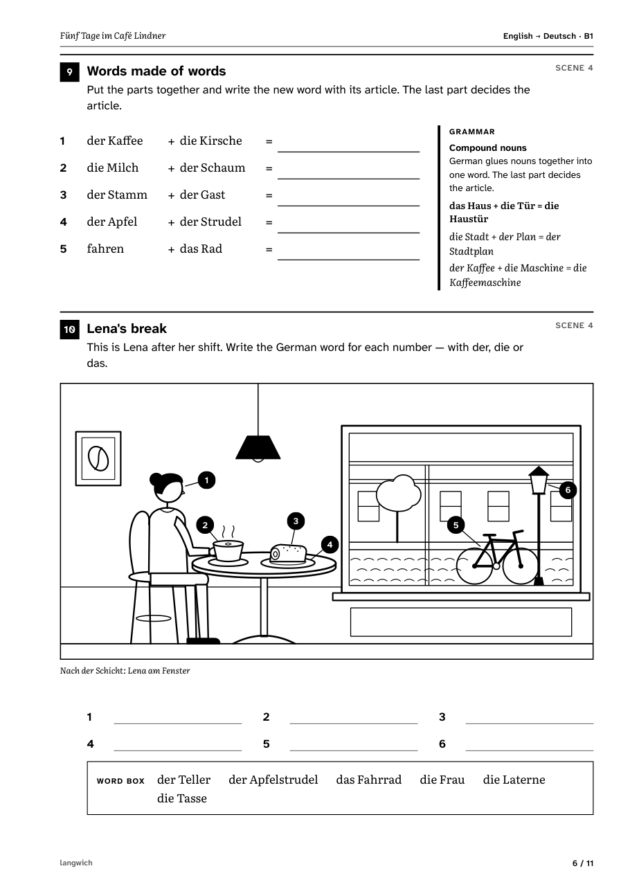
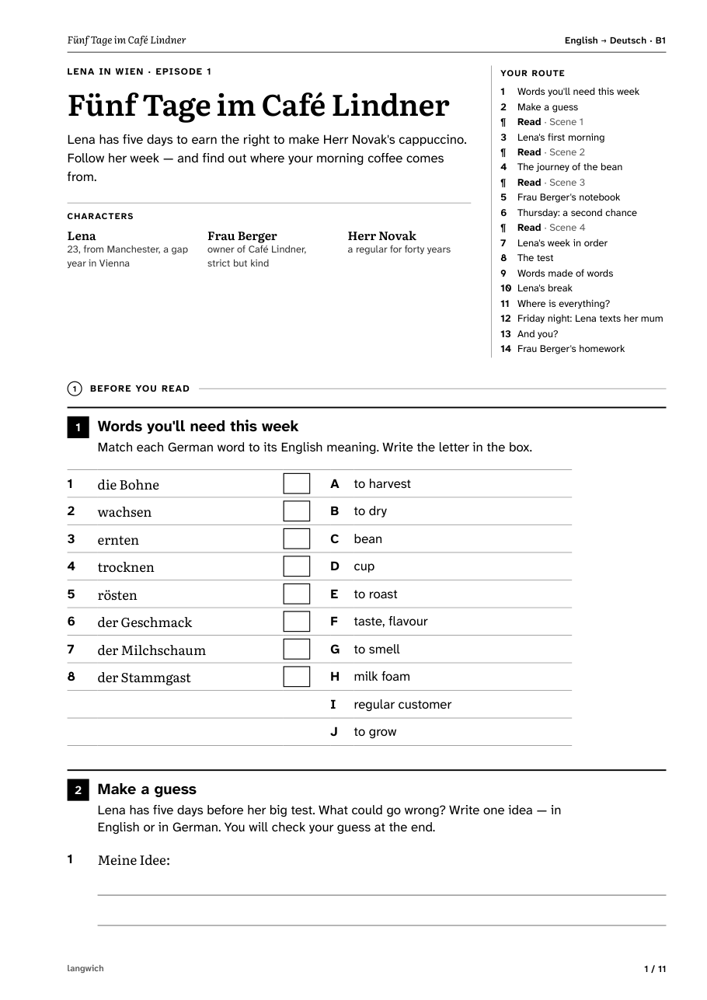
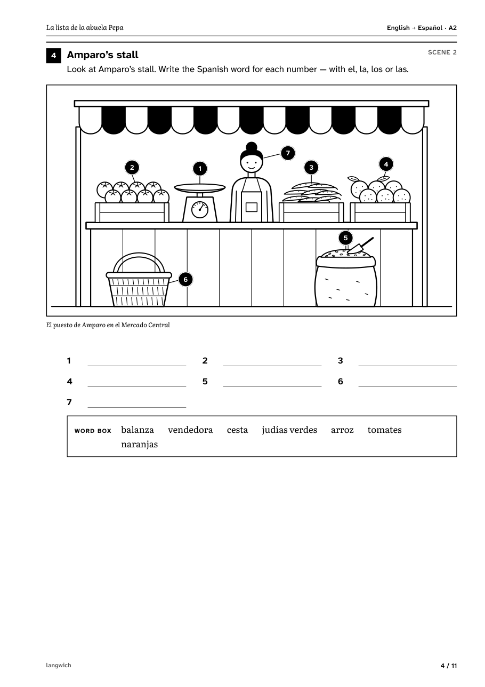
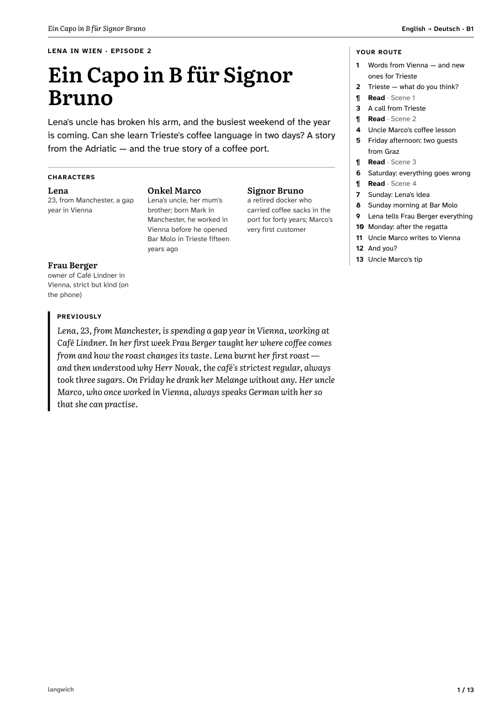
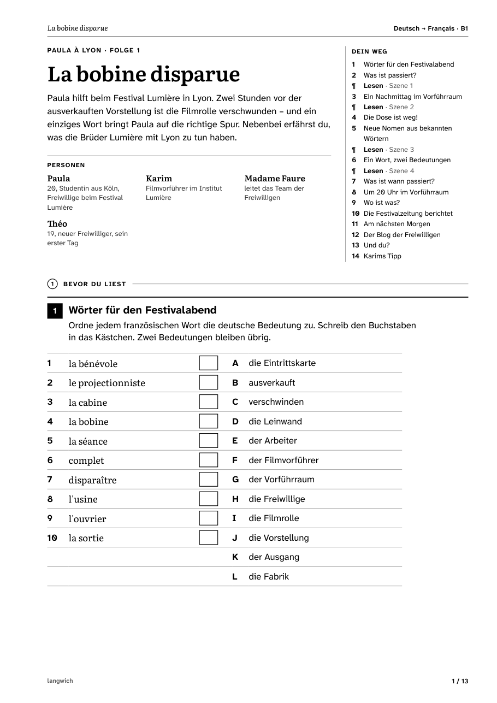
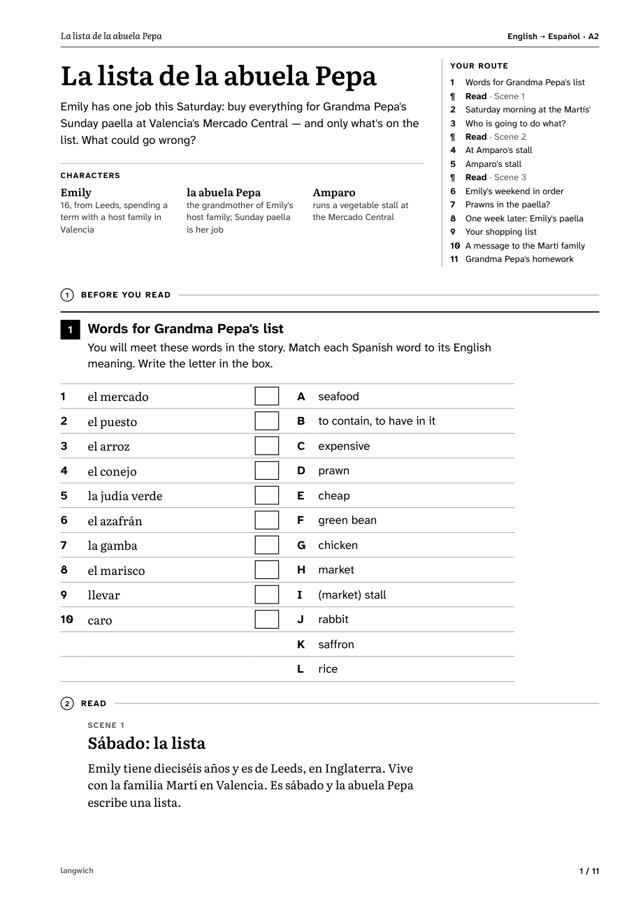
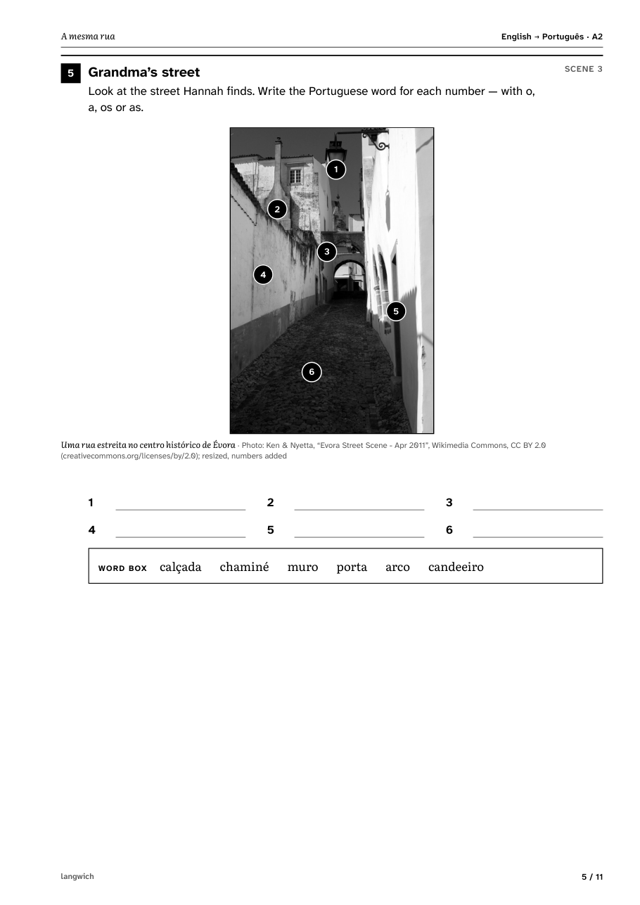
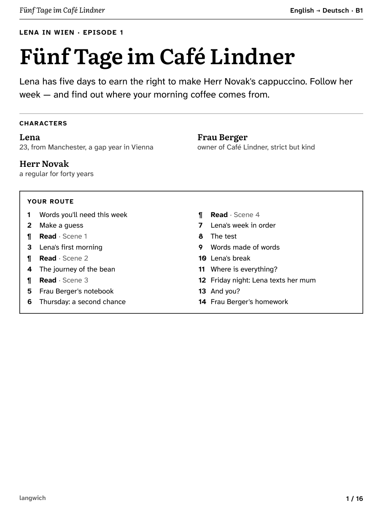

Story worksheets for print & e-paper
Screens generate.
Paper teaches.
langwich turns a short story into a language worksheet you work through with a pen. Any AI — Claude, ChatGPT, Gemini, or one running on your own computer — writes the story, weaves in true facts and builds every task around it. langwich checks its work and typesets the lot for e-paper and print. Then the screen goes off.


examples/lena_01_en_de.json, episode 1 of a series,
rendered to an A4 worksheet (EN → DE, level B1).
More examples below.
The analogue case
Why paper, in an age of bottomless feeds?
Every language app shares a glass rectangle with your inbox, your group chats and a dozen infinite feeds — each engineered to interrupt you. langwich makes the opposite trade: the digital world generates, the analogue world teaches.
Paper doesn’t ping
A worksheet has no notification badge, no autoplay, no “just one more” loop. The only thing that happens next is the word you write.
Handwriting sticks
Writing by hand recruits motor and visual systems that tapping glass never touches — and study after study links it to better recall and deeper understanding.†
A worksheet ends
Feeds are engineered to be bottomless. A sheet of paper is finished when it’s full — completion, not a streak, is the reward.
Easy on eyes and sleep
Calm black-and-white pages made for print and e-paper: readable in full sunlight, and nothing glowing at your face at 11 pm.
Nothing to lose
No account, no subscription, no streak to protect. Your worksheets are PDF files on your own disk — they’ll still open in twenty years.
Screens where they shine
Let the AI do what it’s good at — telling a story, choosing the words, writing the tasks in seconds. Then take the paper somewhere the Wi-Fi can’t follow.
† For instance Mueller & Oppenheimer, Psychological Science (2014), on longhand note-taking and conceptual learning; van der Weel & van der Meer, Frontiers in Psychology (2024), on brain connectivity during handwriting.
The workflow
From an idea to a printout in three steps
langwich is deliberately split in two: an AI writes every word, a small Python tool checks it and sets it on paper. langwich itself calls no API and needs no key and no account — and its renderer fetches nothing from the network: the PDF is made from the JSON, the bundled fonts and the picture the JSON names.
Ask for a prompt
langwich prompt --topic bread prints a complete brief for the AI:
your languages and level, how to tell a story that carries true facts, the task
kinds and the JSON format. Have a photo? --image photo.jpg copies it to
data/pictures/ and makes it the starting point of the story.
Let any AI write the story
Paste the brief into Claude, ChatGPT, Gemini or a model on your own computer. It answers with one JSON file: a story in scenes, true facts, vocabulary, grammar notes and every task with its answers. With a photo attached, it places numbered labels on it; without one, it can draw simple line art.
langwich checks and typesets
langwich validate catches slips — it even reads a chatty reply with a
code fence around the JSON — and writes a repair prompt for the AI.
langwich render puts the tasks in lesson order and typesets the PDF —
A4 or e-paper, with the answers at the back. The format is documented in the
README.
What lands on the page
A lesson in every story
Every worksheet follows the same arc through 8 stages: warm up before you read, then scene by scene — read a little, check what happened, look at the picture, work with the language, read on — then write something of your own and take it further. The AI picks from 13 kinds of task; langwich puts each one right after the scene it belongs to. (These numbers aren’t hand-written, by the way — they’re read from the code on every deploy.)
Before you read
warm_upMeet the key words and make a guess about the story before its first line.
match- Pair each word with its meaning; a few spare answers keep it honest.
Scene by scene: what happened
gistdetailAfter each scene: first the main events, then a closer look at facts, reasons and feelings.
true_false- Tick true or false, and correct the false statements.
multiple_choice- Tick the one right answer.
order_events- Number the events in the order they happened.
questions- Answer in writing, on lines sized for handwriting.
Scene by scene: the picture
pictureOne scene has a picture — your photo, or simple line art the AI drew. Its tasks come right after you have understood the scene.
label- Name the numbered objects in the scene picture; the word box gives the words, you add the article.
draw- No picture? Draw the scene yourself and label it.
Scene by scene: the language
formpracticeNotice the grammar the scene uses, then put the new words and forms into new sentences that carry the story on. A grammar box sits beside the task that practises it.
cloze- Fill the gaps — with a word box, first letters, base forms, translations or no help at all.
transform- Rewrite sentences following a cue: another tense, another person.
word_building- Put the parts together into one word: der Kaffee + die Kirsche.
dialogue- Fill in, or write, the missing lines of a conversation — with a few wrong words in the box.
Your turn — and take it further
productionepilogueWrite about the story or about yourself, then go looking for more in the language you are learning.
writing- Write a text: a prompt, a first line, words to use, a word count — and a model answer at the back.
media_search- Search online in the target language: search terms instead of links, and what to find out.
These are the usual places — any kind of task can sit at any stage. Around the tasks: a cover with the characters and your route through the sheet, glosses in the margin for words no task tests, “Did you know?” boxes with true facts, grammar boxes beside the task that practises them. At the back: a word list, the answers and a translation of every scene.

See it on paper
Stories you can print today
These worksheets and more come with the repository — render them yourself before involving any AI. Each one wraps true facts in a made-up story, and every instruction is in the learner’s own language.
A series
Lena in Wien · EN → DE · B1
Lena, 23, from Manchester, spends a gap year in Vienna, working at Café Lindner. The episodes share their characters and end with a teaser for the next one; from episode 2 on, each opens with a “Previously” recap and brings back words from before.
Episode 1
Fünf Tage im Café Lindner
Five days to earn the right to make Herr Novak’s Melange — and to find out where your morning coffee comes from.

Episode 2
Ein Capo in B für Signor Bruno
Her uncle has broken his arm, and Trieste’s busiest weekend is coming. Can Lena learn how the city orders its coffee in two days?

La bobine disparue · DE → FR · B1
A mystery at the Festival Lumière in Lyon: two hours before a sold-out screening, the film reel is gone. Episode 1 of the series Paula à Lyon, for German speakers learning French — so every instruction is in German.

La lista de la abuela Pepa · EN → ES · A2
Emily has one job this Saturday: buy everything for Grandma Pepa’s Sunday paella at Valencia’s Mercado Central — and only what’s on the list. What could go wrong?

Built from a photo
A mesma rua · EN → PT · A2
Hannah has one afternoon in Évora to find the street in her grandmother’s
fifty-year-old photo. Made with langwich prompt --image from a real
open-licence photo (Ken & Nyetta, CC BY 2.0): the story grew out of what
the picture shows, and the numbered markers sit on it.

The same sheet on an e-reader
With --page epaper every worksheet is set at 157.8 × 210.4 mm in
a single column; notes from the margin move into boxes below the text. Add
--one-task-per-page for room to annotate, and
--solutions separate to keep the answers in a second file.
Bring your own AI
Works with the AI you already use
langwich calls no API and stores no key. The writing comes from whichever assistant you already use, pay for, or run on your own computer. Four ways in:
The repository ships a /langwich slash command. Claude asks
for your languages and level once, suggests a few story ideas, writes the JSON, validates
and repairs it, looks over the language and the facts, and renders the PDF — all in one
conversation. This is the most comfortable way in.
git clone https://github.com/joernmht/langwich
cd langwich
python3 -m venv .venv
.venv/bin/pip install -e .
claude
> /langwich
Add a topic, a photo path or “next episode” after
/langwich. Claude uses the langwich in
.venv (and installs it there if it is missing). Your defaults
are kept in .langwich/profile.json. Works in the Claude Code
CLI, the desktop app and on claude.ai/code.
Any chat assistant that follows long instructions can write a worksheet — ChatGPT, Gemini, Claude.ai, Le Chat. langwich prints the brief; you carry it over and bring the JSON back.
- Print the brief with your languages, level and topic.
- Paste
prompt.txtinto a new chat, or attach the file. Starting from a photo? Add--image— langwich copies the photo todata/pictures/— attach the photo as well, and use a model that can see images. - Save the reply as
data/tides_en_de.json. Just the JSON object is best; if the model wrapped it in a code fence or chatted around it, langwich reads the object anyway and warns. - Check it. If langwich finds problems, paste the repair prompt into the same chat and save the new reply over the file.
- Typeset it.
# 1. the brief (with a photo: add --image harbour.jpg and attach harbour.jpg too; # save the JSON in data/, where the copied photo is) langwich prompt --source en --target de --level B1 --topic tides -o prompt.txt # 4. check the JSON the AI wrote; if there are problems, make a repair prompt langwich validate data/tides_en_de.json langwich validate data/tides_en_de.json --prompt > repair.txt # 5. typeset it → data/tides_en_de.pdf langwich render data/tides_en_de.json
Add --save-profile once, and langwich
remembers your languages, level, colour choice and device (never the story frame):
next time langwich prompt --topic volcanoes is enough.
No cloud at all: langwich works just as well with a model on your own computer — in Ollama, LM Studio or llama.cpp. Small models do better with the shorter brief, and langwich’s repair loop catches what they get wrong.
# once: a copy of the model with a 32k context (Ollama's default is far too small) printf 'FROM gemma3:12b\nPARAMETER num_ctx 32768\n' > Modelfile ollama create gemma3-32k -f Modelfile # a brief half as long, for models of 7–14B parameters langwich prompt --compact --target es --level A2 --topic "a night market" -o prompt.txt # paste prompt.txt into the model's chat, save its answer, then check it langwich validate data/night_market_en_es.json # problems? paste this repair prompt into the same chat, save the reply over the file langwich validate data/night_market_en_es.json --prompt langwich render data/night_market_en_es.json
- Context: the compact brief is about 3,500 tokens and a finished
worksheet another 6,000–12,000, so give the model at least 16k tokens of context — 32k
for the repair loop, which sends the whole JSON back. A cut-off answer is not valid
JSON. In Ollama, use the 32k copy made above (or start the server with
OLLAMA_CONTEXT_LENGTH=32768 ollama serve); in LM Studio, set the context length when you load the model. - Bigger is better: larger models tell better stories and can take the
full brief — leave out
--compact. - Photos need a vision model, such as Gemma 3 or Qwen2.5-VL.
A fresh worksheet on your desk every morning. Claude Code’s print mode runs the whole
loop unattended — it only needs permission to run langwich and to write into
data/:
#!/bin/sh # ~/langwich/daily.sh: one new worksheet a day, saved as data/<date>.pdf cd "$HOME/langwich" || exit 1 PATH="$HOME/langwich/.venv/bin:$PATH" # the langwich installed in .venv day=$(date +%F) langwich prompt --target de --level B1 -o "data/$day-prompt.md" task="Read data/$day-prompt.md and write the worksheet it asks for to data/$day.json. Choose a topic that no other worksheet in data/ has used yet. Then run 'langwich validate data/$day.json' and fix what it reports until there are no errors. Finally run 'langwich render data/$day.json'." claude -p "$task" --allowedTools "Bash(langwich:*)" "Edit(data/**)"
Make it executable (chmod +x ~/langwich/daily.sh) and add
two lines with crontab -e. Cron starts with a bare
PATH, so name the folder that holds
claude (command -v claude shows it);
the script adds langwich’s .venv itself:
PATH=/usr/local/bin:/usr/bin:/bin:/home/you/.local/bin 30 6 * * * $HOME/langwich/daily.sh >> $HOME/langwich/data/cron.log 2>&1
The permissions are deliberately narrow:
Bash(langwich:*) lets Claude run langwich and nothing else,
Edit(data/**) lets it write only inside
data/; reading files needs no permission. Log in to Claude Code
once as the user the cron job runs as.
Rather stay offline? The same loop with a local model through Ollama — up to three repair rounds, then render:
#!/bin/sh # ~/langwich/local.sh: the same with a local model (Ollama), fully offline cd "$HOME/langwich" || exit 1 PATH="$HOME/langwich/.venv/bin:$PATH" model=gemma3-32k # gemma3:12b with a 32k context, made once: ollama show "$model" >/dev/null 2>&1 || { printf 'FROM gemma3:12b\nPARAMETER num_ctx 32768\n' > data/Modelfile ollama create "$model" -f data/Modelfile } day=$(date +%F) langwich prompt --compact --target de --level B1 -o "data/$day-prompt.md" ollama run "$model" --format json < "data/$day-prompt.md" > "data/$day.json" for round in 1 2 3; do langwich validate "data/$day.json" && break langwich validate "data/$day.json" --prompt > "data/$day-repair.md" [ -s "data/$day-repair.md" ] || break # nothing the model can repair ollama run "$model" --format json < "data/$day-repair.md" > "data/$day-fixed.json" || break mv "data/$day-fixed.json" "data/$day.json" done langwich render "data/$day.json"
Any model you have pulled works in place of
gemma3:12b — keep the 32k context
(PARAMETER num_ctx 32768): the repair round sends the whole
worksheet back. ollama run … --format json keeps the answer to
pure JSON, and the loop stops when there is nothing the model can repair. Pair either
script with an e-paper tablet or a duplex printer, and the day starts with a worksheet
instead of a feed.
Get started
A few commands to your first worksheet
You need Python 3.11 or newer; langwich goes into a virtual
environment, .venv (in a new terminal, activate it again, or
call .venv/bin/langwich). PDFs are made with WeasyPrint,
which needs the Pango library from your system (brew install
pango on a Mac; the README has the steps for Linux and Windows).
The repository includes 5 complete worksheets, so you
can print one before involving any AI at all — black-and-white duplex is fine.
Instructions are written in your language by the AI; langwich’s own page labels are built in for 6 languages (English, German, French, Spanish, Italian, Portuguese), and for any other the AI writes those too. Then put your phone in another room.
git clone https://github.com/joernmht/langwich cd langwich python3 -m venv .venv && . .venv/bin/activate pip install -e . # render a bundled example → data/lena_01_en_de.pdf langwich render examples/lena_01_en_de.json # the same for an e-reader, answers in a second file langwich render examples/lena_01_en_de.json \ --page epaper --solutions separate -o data/lena_epaper.pdf # your own story: a brief for any AI … langwich prompt --target fr --level A2 \ --topic "a bakery in Lyon" -o prompt.txt # … then check and typeset the JSON it writes langwich validate data/a_bakery_in_lyon_en_fr.json langwich render data/a_bakery_in_lyon_en_fr.json